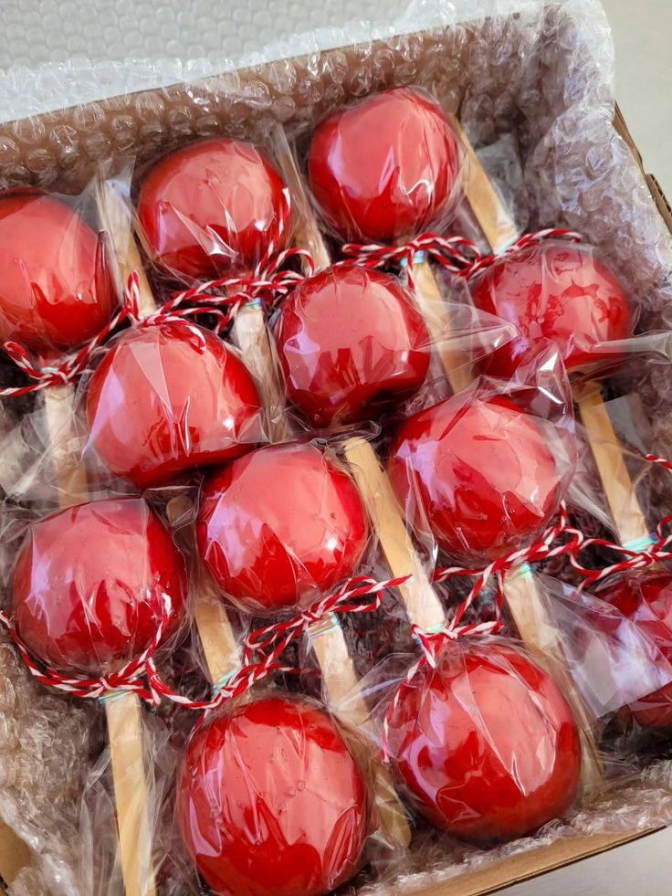

Maçã do Amor
Uma maçã crocante e suculenta, envolta em uma camada doce e brilhante de caramelo ou açúcar, perfeita para festas e momentos divertidos.

Ingredientes
Rende 6 a 8 maçãs
- 6 maçãs médias
- 1 xícara de açúcar
- 1/4 xícara de água
- 1 colher de sopa de glucose de milho
- Corante vermelho alimentício
- Palitos de madeira
Modo de Preparo
Tempo estimado: 30 minutos
- Lave e seque bem as maçãs, inserindo um palito de madeira em cada uma.
- Em uma panela, misture o açúcar, a água e a glucose. Cozinhe em fogo médio até formar um caramelo dourado.
- Adicione algumas gotas de corante vermelho e misture bem.
- Segurando pelo palito, mergulhe cada maçã no caramelo até cobrir completamente.
- Deixe escorrer o excesso e coloque as maçãs sobre uma assadeira untada ou forrada com papel manteiga.
- Deixe esfriar completamente antes de servir.
Dica do Chef: Para um toque divertido, polvilhe confeitos coloridos ou açúcar cristal sobre o caramelo ainda molhado.